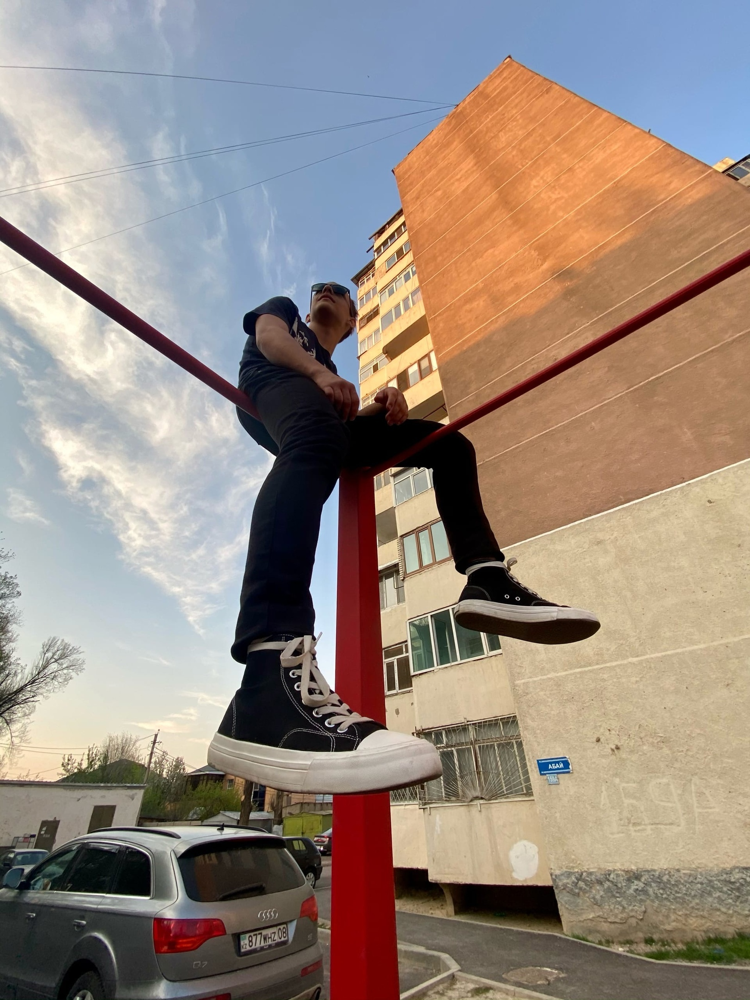

These are our two owners of this company

Furry
Furry, was born and lives in Veliky Novgorod. At the age of 16, he started working on websites. Survived a lot of all sorts of garbage, but continues to stay afloat. In a nutshell: genius, philanthropist

AKL
AKL, was born and lives in Taraz, no one knows what it is and where, but it is in Kazakhstan. At the age of 12 he began to study music, at 16 he began to make websites. Shocked by life no less than a Furry. In a nutshell: genius, radical.